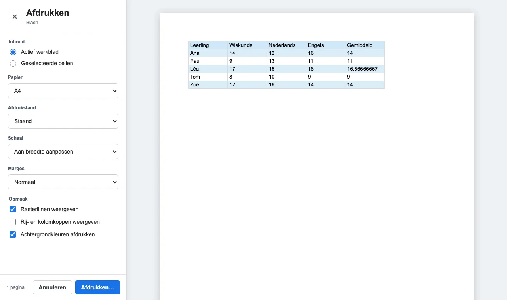

Afdrukken
Bestand › Afdrukken… of Ctrl P toont de pagina’s zoals ze afgedrukt worden.

| Instelling | Keuzes |
|---|---|
| Inhoud | het actieve blad, of de cellen die vóór het openen van het venster geselecteerd waren |
| Papier | A4, Letter |
| Afdrukstand | staand, liggend |
| Schaal | Werkelijke grootte; Aan breedte aanpassen: alle kolommen op één paginabreedte; Op één pagina passen |
| Marges | normaal, smal, breed |
| Opmaak | rasterlijnen, rij- en kolomkoppen, achtergrondkleuren |
Afdrukken… opent het venster van de browser, waar je de printer of opslaan als pdf kiest.
- Alleen de cellen worden afgedrukt, met hun opmaak: geen grafieken, afbeeldingen of sparklines.
- Verborgen rijen en kolommen worden niet afgedrukt.
- Een selectievakje wordt als TRUE of FALSE afgedrukt.
- Er wordt één blad tegelijk afgedrukt.
Om met de grafieken af te drukken, de werkmap opslaan en in Excel of LibreOffice openen.